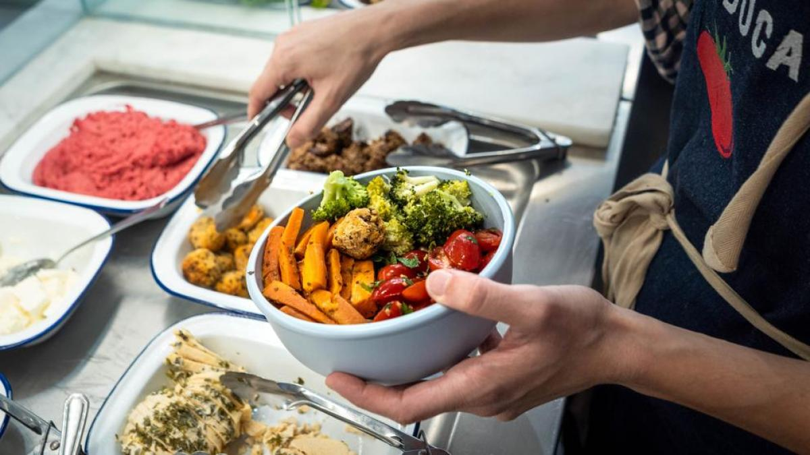
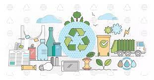
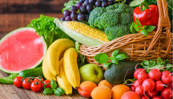

Ensalada de Frutas Frescas
Ingredientes:
- Manzana
- Plátano
- Fresas
- Uvas
- Yogur natural
Preparación: Corta todas las frutas en trozos pequeños, mézclalas en un tazón grande y añade yogur natural al gusto. ¡Disfruta de una merienda saludable y deliciosa!
Bienvenido a nuestra página sobre como nuestros Malos Habitos Impactan el Medio Ambiente. Aprende cómo puedes reducir la generación de basura en nuestra escuela y adoptar hábitos alimenticios más saludables. Se parte del cambio y apoya al planeta, los jovenes somos el futuro del mundo
Conoce la cantidad de basura generada en nuestra escuela y el impacto que tiene en el medio ambiente. Incluir información investigada
Descubre los beneficios de una alimentación saludable y cómo puede mejorar tu vida y el medio ambiente.
Video conciencia ambiental| consejos | |||||||||||
|---|---|---|---|---|---|---|---|---|---|---|---|
| consejo 1 |
|  |
consejo 2 |
|  |
consejo 3 |
|  |
|